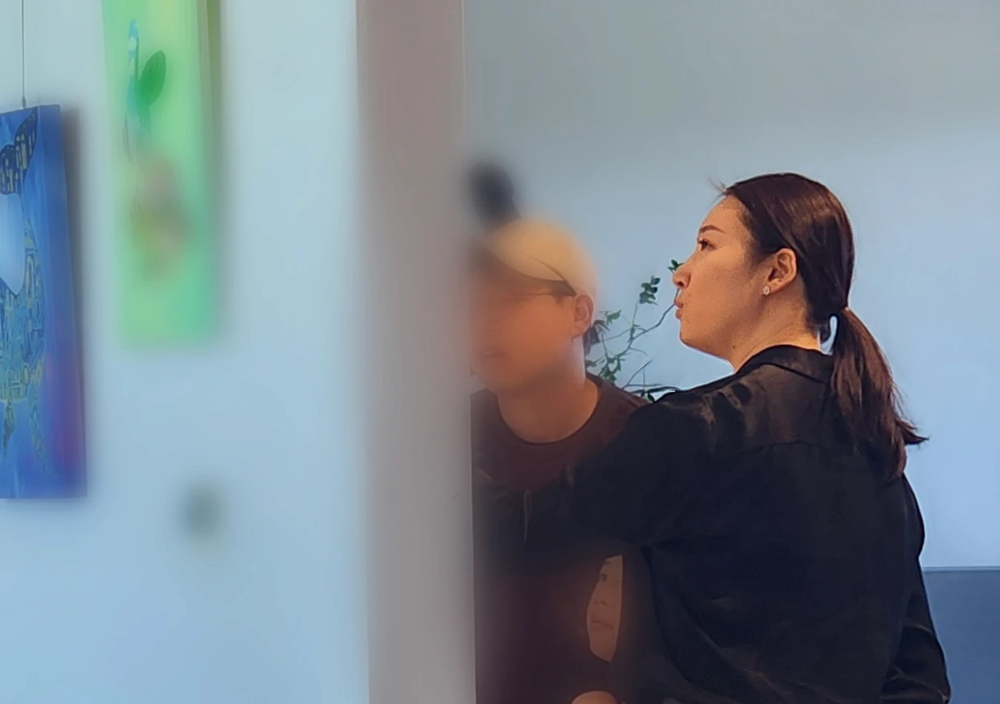
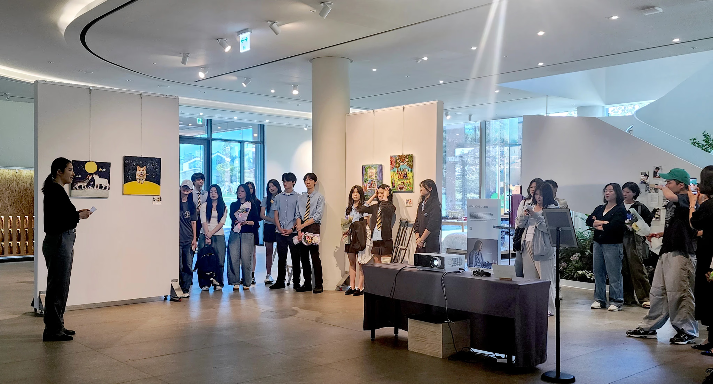

The Flatland Dream — 2025 Exhibition Recap

1. Do you have your own way or criteria for appreciating artworks?
When I view an artwork, I tend to prioritize the impressions and aesthetic qualities conveyed through visual elements—such as color, texture, and the flow of lines—rather than immediately analyzing its intention or message. Since visual art ultimately communicates emotion through sight, I believe visual sensitivity and aesthetic resonance are more important than anything else. This serves as my first point of entry in understanding a piece.
From there, I gradually examine the artist’s background, message, working process, and choice of materials, considering how emotion and meaning are interconnected.
2. Was there anything you were particularly mindful of or concerned about while preparing as a docent?
Above all, my greatest concern was conveying the artist’s perspective without distorting it. Especially in the case of adolescent artists, the emotions embedded in their works are often pure and honest, and I felt that over-explaining them through an adult lens could strip away their original essence.
For this reason, when preparing my explanations, I made a conscious effort to clearly distinguish between my own interpretation and what the artist intended to express, ensuring that no gap emerged between the two. I also tried to leave room in my explanations so that audiences could form their own interpretations.
3. Were there any emotions or thoughts that stayed with you while viewing the works of student and youth artists?
I was reminded of many emotions that adults tend to forget. There was the courage to express one’s feelings without hesitation, an attitude where the desire to create outweighed the fear of failure, and small yet deeply honest stories.
Each artwork embodied a perspective unique to that stage of life, making the experience feel fresh and full of vitality. Rather than framing the works through adult standards, I found it meaningful to encounter the world as seen through the eyes of young artists—expressions that may still be unpolished, but filled with sincerity and passion.
4. Was there a particular work you felt especially attached to, or a story that held special meaning while preparing your explanations?
As this was a group exhibition involving many artists, rather than selecting a single work, I would say the overarching theme of “communication” resonated with me most strongly.
Seeing works created by artists for whom communication itself can be a challenge, alongside those of non-disabled artists who sought to understand and respond through acts of homage, was a deeply moving experience that stirred profound emotion within me.
5. What personal meaning did this exhibition leave with you?
For me, it was a time of learning and reflection. Through this exhibition, observing the many individuals who have continuously devoted themselves to these efforts, as well as the artists and their remarkable perspectives and expressions, prompted me to reflect on myself.
In particular, witnessing audiences feel moved and surprised as they listened to the explanations in front of the artworks—and seeing their gaze change as their understanding deepened—reminded me once again of how deeply and warmly art has the power to connect people.
6. How would you like to see youth art platforms like ABST develop in the future?
I hope this platform continues to highlight “process” and “intention” more than final outcomes. Rather than focusing solely on completed works, I would like to see greater value placed on the moments of growth artists experience throughout the preparation process.
It would also be meaningful to create a space where young artists of different age groups can share experiences and emotions together. Through this, I hope a community emerges where people of different generations engage in dialogue through art, and where art serves as a bridge that connects individuals to one another.
7. Do you have your own way of resting or relieving stress?
I usually unwind by listening to music I enjoy, cooking, or organizing and tidying my surroundings. While these may seem like simple activities, the repetitive motions help calm my mind, and seeing an orderly space gives me a sense of emotional stability.
I also value time spent reading or simply listening to music—moments when I can comfort myself and regain balance. I believe these small moments accumulate and give me the strength to return to everyday life.

1. 평소 작품을 감상하는 선생님만의 방식이나 기준이 있으신가요?
저는 작품을 볼 때 의도나 메시지를 먼저 따져보기보다, 색감이나 질감, 선의 흐름 같은 시각적 요소를 통해 느껴지는 인상과 미학적 요소를 우선적으로 살펴봅니다. 그림이라는 것이 결국 시각을 통해 느낌을 전달하는 매체이기에, 시각적인 감성과 심미성이 다른 무엇보다 중요하다고 생각합니다. 그래서 이 부분이 저에게는 작품을 이해하는 첫 번째 기준이 됩니다.
이후에 작가의 배경이나 메시지, 작업 과정, 소재 선택을 천천히 들여다보며 감정과 의미가 어떻게 연결되는지 생각해보는 편입니다.
2. 도슨트를 준비하며 고민되거나 신경 쓴 부분이 있었다면?
무엇보다도 작가의 시선을 왜곡하지 않고 전달하는 것이 가장 큰 고민이었습니다. 특히 청소년 작가들의 경우 작품에 담긴 감정이 매우 순수하고 솔직한데, 어른의 언어로 과하게 설명하면 오히려 본래의 결이 사라질 수 있다고 생각했어요.
그래서 설명을 준비할 때 ‘내가 해석한 것’과 ‘작가가 표현하고자 한 것’을 조심스럽게 분리해 두고, 그 둘 사이에 괴리가 생기지 않도록 하는 데 중점을 두었습니다. 또한 청중이 스스로 여지를 느낄 수 있도록 설명의 여백을 남기려 노력했습니다.
3. 학생·청소년 작가들의 작품을 보면서 특별히 마음에 남은 감정이나 생각이 있으셨나요?
어른들이 잊고 지내는 감정들이 많이 떠올랐던 것 같습니다. 망설임 없이 자기 마음을 드러내는 용기, 실패에 대한 두려움보다 표현하고 싶은 마음이 더 컸던 태도, 그리고 작지만 솔직한 이야기들.
작품 하나하나가 ‘그 나이대에만 가능한 시선’을 담고 있어서 저에게는 신선하고 열정이 느껴지는 시간이었습니다. 어른의 기준으로 틀을 씌우기보다, 아이들이 바라보는 세계와 아직 투박하지만 그 안에서 느껴지는 순수함과 열정을 보는 것이 좋았습니다.
4. 설명을 준비하며 애정을 담았던 작품이나 특별히 의미가 컸던 스토리가 있다면?
여러 작가가 참여하는 그룹전이기에 특정 작품을 꼽기보다, 이번 전시가 가진 ‘소통’이라는 의미가 더 크게 다가왔다고 말씀드리고 싶습니다.
소통 자체가 도전인 작가들의 열정이 담긴 작품들, 그리고 이를 오마주를 통해 이해하고자 한 비장애 작가들의 작업을 보며 마음 깊은 곳에서 감동이 벅차오르는 경험을 했습니다.
5. 이번 전시가 선생님께 개인적으로 어떤 의미로 남았나요?
저에게는 ‘배움과 깨달음의 시간’이었습니다. 이번 전시를 통해 이러한 노력을 지속해온 많은 분들, 작가들, 그리고 작가들이 보여주는 놀라운 시각과 표현을 보면서 저 자신을 다시 돌아보는 시간이 되었어요.
특히 관객들이 작품 앞에서 설명을 들으며 감동하고 놀라워하는 모습, 그리고 이해가 깊어지면서 작품을 바라보는 눈빛이 달라지는 모습을 볼 때마다, 예술이 사람을 연결하는 방식이 얼마나 깊고 따뜻한지 다시 한번 느꼈습니다.
6. 앞으로 ABST와 같은 청소년 예술 플랫폼이 어떻게 발전하면 좋을까요?
저는 이 플랫폼이 ‘결과’보다 ‘과정’과 ‘의도’가 더 많이 빛나는 전시가 되었으면 합니다. 작품만 전시하는 것이 아니라, 준비 과정에서 작가들이 성장해 가는 순간들에 의미를 두고 싶어요.
또 다양한 연령대의 아이들이 함께 느끼고 경험할 수 있는 장이 마련된다면 더 좋겠습니다. 이를 통해 서로 다른 연령의 관객들이 작품을 매개로 대화할 수 있는 커뮤니티가 형성되고, 예술이 서로를 연결하는 징검다리가 되길 기대합니다.
7. 선생님만의 휴식 방식이나 스트레스 해소법이 있다면?
저는 좋아하는 음악을 듣거나 요리, 정리를 하며 마음을 정돈하는 편입니다. 특별한 활동은 아니지만, 반복되는 움직임 속에서 마음이 가라앉고, 정리된 공간을 보면 심리적으로 안정되는 느낌을 받아요.
또 책을 읽거나 음악만 들으며 스스로를 위로하고 재정비하는 시간도 소중하게 생각합니다. 이런 작은 시간이 모여 다시 일상으로 돌아갈 힘을 만들어주는 것 같습니다.